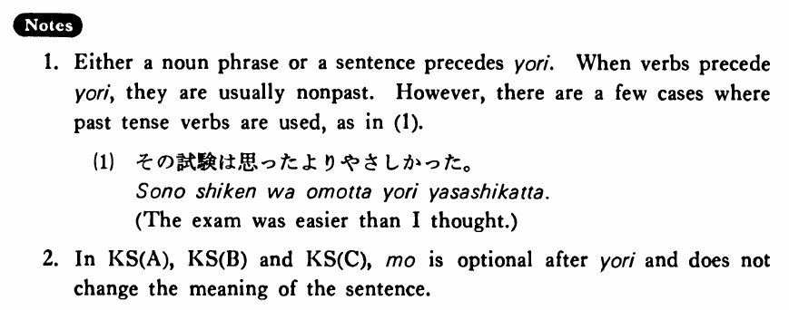

←
DoJG
→
より (1)
(B. 564)
Example sentences
(ksa).
日本語はスペイン語
より
（も）面白い・面白いです。
Japanese is more interesting than Spanish.
(ksb).
車で行くほうがバスで行く
より
（も）安い・安いです。
Going by car is cheaper than going by bus.
(ksc).
私は旅行する
より
（も）うちにいたい・いたいです。
I'd rather stay at home than go on a trip.
(ksd).
これ
より
（ほか（に））方法はない・ありません。 バスで行く
より
（ほか（に））仕方がない・ありません。
There is no other way than this. There is no other way than to go by bus.
(a).
漢字は平仮名
より
難しい。
Kanji is more difficult than hiragana.
(b).
林さんは私
より
速く走れる。
Mr. Hayashi can run faster than I can.
(c).
僕はステーキ
より
魚の方が好きだ。
I prefer fish to steak.
(d).
図書館で勉強するほうが家で勉強する
より
よく出来る。
Studying at the library is more productive than studying at home.
(e).
それは赤と言う
より
茶色に近かった。
That was closer to brown rather than saying it was red.
(f).
日本語を勉強したかったら、アメリカの学校で勉強する
より
日本へ行きなさい。
If you want to study Japanese, go to Japan rather than studying at a school in America.
Formation
(i)
Noun
より
これ
より
Than this
(ii)
{V/Adjective い} informal nonpast
より
話す
より
Than talking
高い
より
Than being expensive
(iii)
Adjective な stem
なより
静か
なより
Than being quiet
(iv)
Noun
であるより
先生
であるより
Than being a teacher
